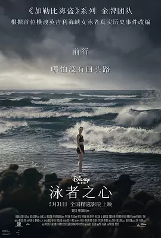

9.0
泳者之心
Young Woman and the Sea
2024
美国
评分 9.0
导演:
乔阿吉姆·罗恩尼
演员:
黛西·雷德利 / 蒂尔达·格哈姆-哈维 / 斯蒂芬·格拉汉姆 / 金·波德尼亚 / 詹妮特·海因
类型:
传记,剧情,运动
剧情简介
在 20 世纪初的纽约，年轻的 Gertrude ‘Trudy’ Ederle 在一次由轮渡火灾引发的悲剧中，目睹水性不佳的女孩成了受害者，从那一刻起，她便立志掌握那片曾令她无助的水域。她从病中痊愈、身负部分听力障碍，却在家人的支持与偏见夹缝中，坚定地把泳池当成她最真实的舞台。她加入女性游泳协会，在女权尚处于萌芽的时代，被视为另类甚至“不适合运动”的存在。教练严厉、队友怀疑、父权社会带来阻力，她却以每一次扑通入水、每一次冲刺突破都回应那些低声的“你不行”。巴黎奥运会，她站上领奖台，却知道更大的海还在等她。跨越英吉利海峡——那个把法国和英国分隔开来的辽阔水域，成了她必须征服的战场。骤风突浪、刺痛的水母触须、逐渐耗尽的体力，却在她心底升腾起一个信念：泳者不仅是水中的奔跑者，更是人生中的敢梦者。镜头切换在翻滚的浪尖与她坚毅的眼神之间，彰显的是英雄从孤独中崛起，也映照出时代对女性的枷锁。“她为什么要游？”这条问题始终伴随着她。答案在她那一次次入水的颤抖与爆发里找到：不是为得奖杯，而是为了告诉自己——我能。影片以她离岸、漂流、奋力、抵岸为叙事脉络，却更在静水中打出余波：一个女人，在长长的泳程里，用自己的身体丈量自由。